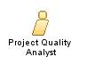

| Role: Project Quality Analyst |
 |
|
Relationships
 |
||
| Additionally Performs | ||
|---|---|---|
Main Description
The role is responsible for performing internal process and product compliance reviews at intervals defined in project quality plans. This role is responsible for tracking and reporting on:
A Project Manager or Team Leader may assign other tasks, for example, to conduct quality reviews, however these
delegated tasks are not part of this role. |
Staffing
| Skills |
|
|---|
| © Copyright IBM Corp. 1987, 2012 All Rights Reserved Property of IBM These materials are intended only for use as part of an IBM engagement |